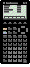
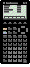

1


2

3

4

5

6

7

8

9

10

TI-85 Link Protocol Guide v1.0 - System Backup Transfers
A System Backup is one large transmission containing all user-modifiable data in the calculator. The file format that the TI-85 Graph Link software uses can be found in the file formats section of this documentation.
The protocol for all system backup transfers is shown below. For information on packet formats, click here.
A computer can be either the sending unit or the receiving unit.
| Step | Direction | Packet | ||
|---|---|---|---|---|
|
1 |
 |
|
|
VAR with backup-style header and type ID = 0x1D. |
|
2 |
|
ACK | ||
|
3 |
|
CTS or SKIP/EXIT. If exit, do step 4 and quit. | ||
|
4 |
|
ACK | ||
|
5 |
|
DATA - section 1 (system data) | ||
|
6 |
|
ACK | ||
|
7 |
|
DATA - section 2 (user data) | ||
|
8 |
|
ACK | ||
|
9 |
|
DATA - section 3 (variable table?) | ||
|
10 |
|
ACK | ||
Example (PC sending backup to TI):
| PC: | 05 06 09 00 B1 08 1D B3 19 DA 00 F7 8B FE 03 | Variable header: Backup |
| TI: | 85 56 09 00 | Acknowledgement of header |
| 85 09 09 00 | Clear to send backup | |
| PC: | 05 56 00 00 | Acknowledgement of CTS |
| 05 15 B1 08 <8B1h bytes of data plus checksum> | Backup data section 1 (system data) | |
| TI: | 85 56 B1 08 | Acknowledgement of data |
| PC: | 05 15 B3 19 <19B3h bytes of data plus checksum> | Backup data section 2 (user data) |
| TI: | 85 56 B3 19 | Acknowledgement of data |
| PC: | 05 15 DA 00 <DAh bytes of data plus checksum> | Backup data section 3 (variable table?) |
| TI: | 85 56 DA 00 | Acknowledgement of data |
| PC: | 05 92 00 00 | End Of Transmission (if PC
sending) |